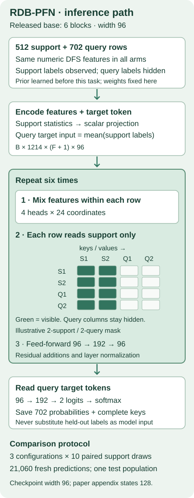

200 · Defend the result. Defend the next experiment.¶
Year 5 exit exam · 20-minute review + notebook + written defense
Your win: produce one auditable FM reproduction and one research proposal that could prove your favorite explanation wrong. The mission is to establish when relational learning adds value. A close benchmark score is evidence for a specific computation; your proposal must explain what question remains.
1 · Close the books first¶
Write three answers before scrolling: What distinguishes released-checkpoint inference from pretraining? Why are ten support draws not ten independent replications? Why does an old event timestamp fail to prove that a feature was available?
Retrieve, then check
Checkpoint inference uses existing learned weights. Pretraining learns those weights across tasks. The ten draws share one test population. Event time records when something happened; arrival time records when a predictor could access it. Neither score agreement nor an event timestamp establishes historical availability.
The bridge to this exam. L197 assembled claims and limitations. L198 made three proposal cards; L199 separated priority, feasibility and launch authorization. Now you must connect a measured result to one testable question. Bring your own cards and selection memo into this exam; the author's worked choice is an example to challenge, not a substitute for your decision.
If you have not finished those cards, complete the self-contained worksheet here. Ranking candidates is authoring a plan; it does not establish novelty or learner mastery.
2 · State exactly what you reproduced¶
A foundation model here is a model pretrained across tasks and reused on a new task. An in-context prediction uses labeled support examples as input without updating the model's weights on the new task. A checkpoint is a saved set of learned weights. A support draw is a sampled set of training examples that the model may read.
Our named target is RDB-PFN v5, Table 9, rel-f1/driver-dnf, 512 support examples, with the relational-prior checkpoint, the single-table-prior checkpoint, and TabICL v1.1. Read the primary paper and appendix, then the frozen execution protocol.
| Held fixed | Full approved scope |
|---|---|
| Released rows | 11,411 train; 566 validation; 702 test |
| Support | 512 training rows without replacement, seeds 0–9 |
| Pairing | Each configuration receives the same support for a given draw |
| Checkpoints | Released fixed checkpoints; no test-based selection |
| Preprocessing | Support medians; all-missing becomes zero; support normalization |
| Evaluation | All 3 × 10 runs; all 702 queries per run |
| Comparison | Mean AUROC within 0.02 of the named rounded target |
Why no task training loop? RDB-PFN has already learned its weights in synthetic pretraining. The released evaluation places support features and labels beside query features. Calling the classifier's fit prepares that context; this lane does not optimize RDB-PFN weights on F1. Reproducing this experiment means performing fresh inference from the released weights. It does not mean repeating synthetic pretraining.
Scope check. The source checkpoint uses width 96; the paper appendix says 128. We preserve checkpoint-compatible width 96. The released binary label complements the currently reconstructed DNF label. Keep released labels and probabilities for table comparison; complement both for current DNF interpretation. Full raw feature reconstruction, historical identity and complete feature arrival provenance remain unresolved. Numerical closeness is not a leakage certificate. The separate RDBLearn reproduction remains INCOMPLETE_SOURCE_PREPROCESSING_GATE.
3 · Trace the model before trusting the score¶
Predict: can changing one query's hidden label change another query's output? It must not: query labels never enter the model, and row attention reads support rows only.


Inputs. The released task has numeric DFS features. DFS means feature aggregation across related tables; those flat columns already contain relational information. The relational prior describes synthetic training tasks, not a graph traversed by this predictor at evaluation time. Both RDB-PFN checkpoints see the same released task features, so their difference is not a clean “graph versus no relations” comparison.
Feature tokens. Normalize each scalar feature with support statistics, clamp to ±100, then project it into 96 coordinates. Add a target token: observed support labels for support rows, the support-label mean for query rows. The tensor has shape batch × rows × (features + 1) × 96.
Two attention axes. Each of six blocks first mixes feature tokens within each row. It then mixes rows separately for each feature position. Every receiver reads keys and values from support rows only. Four attention heads divide the width into four 24-coordinate parts. Residual additions keep the previous representation; layer normalization rescales it. A 96 → 192 → 96 feed-forward network follows.
Output. A 96 → 192 → 2 decoder reads each query's target token. Softmax converts the two logits into class probabilities. We save the probability of released label 1 beside its complete (driverId, date) key. The visible model source is reproduced inline in the notebook. Its course prior helper is illustrative; it is not the released pretraining generator. Author verification compares the visible forward computation against both real checkpoint models in float64; the fresh full evaluator uses the unchanged float32 source path.
4 · Work the score by hand¶
AUROC is the fraction of positive–negative pairs in which the positive receives the higher score, with half credit for a tie. It measures ranking, not calibrated probabilities or operational benefit.
Worked example. Positive scores are [0.5, 0.8]; negative scores are [0.1, 0.5]. The four comparisons earn 1, 0.5, 1, 1: AUROC is 3.5 / 4 = 0.875. Ties matter. A row permutation should change nothing after joining predictions to labels by complete keys.
Two keys, not one. Driver 1 at cutoff 10 and driver 1 at cutoff 20 are different queries. Joining only on driver ID can silently attach the wrong outcome. The notebook asks you to implement the full-key join and reject duplicates, missing identities, nonfinite probabilities and incomplete run grids.
| Configuration | Fresh mean AUROC ± sample SD | Paper target | Comparison |
|---|---|---|---|
| RDBPFN | 0.721938 ± 0.019983 | 0.7219 | CLOSE |
| RDBPFN_single | 0.663990 ± 0.034177 | 0.6640 | CLOSE |
| TabICLv1.1 | 0.717568 ± 0.009770 | 0.7176 | CLOSE |
RDB-PFN minus TabICL: +0.004369 mean paired difference, positive in 6/10 support draws. Every draw and full report. These are new L200 predictions.
The standard deviation describes variation over ten support draws on one fixed test set. It is not a confidence interval over databases. The tolerance of 0.02 is a predeclared descriptive acceptance rule, not a statistical equivalence test. A paired difference uses matching support draws; it still cannot establish broad superiority or an independent replication.
Execution and agreement are separate. All 30 valid runs can be complete while a target remains OUTSIDE_TOLERANCE. Report both. Never remove an awkward draw, switch label orientation on one side only, or use test performance to pick a checkpoint.
5 · A passing result does not pass the exam for you¶
Change each evidence state below. The baseline is a verified reproduction with proposal and defense pending. Notice that filling all fields only produces ready for teacher review. The widget is a planning aid; it neither grades your reasoning nor writes a mastery record.
The reproduction gate requires authenticated inputs, complete runs, independent scoring, comparison and a written account of deviations. The proposal gate requires a falsifiable question, controls, data availability, uncertainty and a complete cost estimate. The defense gate requires your explanation of why the evidence supports only the stated claim. These are distinct deliverables.
6 · Turn a result into a falsifiable proposal¶
A hypothesis is a statement that could be weakened by an observation. A control holds competing explanations steady. A falsification rule states beforehand which observation would make you revise the hypothesis. A practical threshold, δ, is the smallest effect worth acting on; justify it before collecting the proposed study's outcomes.
Complete three cards using the worksheet. For each, state the question, required evidence, baseline, cost and first blocking condition. Rank them with explicitly justified criteria, discuss sensitivity to those judgments, then select one. Do not copy L199's ordinal ratings onto L198's different experiments.
Worked author example — not an approved new experiment. Ask whether a model's apparent benefit from related-row context shrinks when features must have actually arrived by prediction time. In one fixed learner family, compare target-row-only input against added relational context under both event-time and measured-arrival policies. Keep labels, query identities, splits and tuning budget matched.
Let D = (context − control)event − (context − control)arrival, using the same higher-is-better metric in every cell. With illustrative AUROCs 0.75, 0.70, 0.71, 0.69, D = 0.05 − 0.02 = 0.03. These four numbers are invented arithmetic, not experimental measurements. The formula asks how much the context advantage shrinks; it does not isolate graph architecture.
Predeclare δ and an uncertainty method appropriate to the experimental units. An interval entirely above δ supports practically meaningful shrinkage; an interval overlapping δ is inconclusive; an interval entirely below δ weakens that claim. Correlated support draws do not supply independent databases. The existing RDB-PFN score does not estimate D because it lacks the four matched information-policy conditions.
First feasibility question: can measured arrival histories be obtained and aligned to query cutoffs? If not, stop or explicitly redesign the question. Artificial delays would test a simulation claim. A budget estimate for future training is still required; this lesson's reproduction approval does not authorize that future study. Novelty remains NOT_ESTABLISHED until a relevant literature search and argument support it.
7 · Your submission and defense¶
Submit the notebook, complete run report with raw predictions and provenance, and a 1,000–1,500 word proposal. Use this rubric; presence checks cannot grade scientific quality.
| Criterion | What a defensible submission shows | Points |
|---|---|---|
| Reproduction | Exact target, full grid, pinned inputs, independent scores, deviations | 0–2 |
| Explanation | Support/query information flow, label semantics, evidence limits | 0–2 |
| Research design | One falsifiable hypothesis, matched controls, metric and δ | 0–2 |
| Feasibility | Available data, complete cost, stop rule and alternative | 0–2 |
| Defense | Counter-evidence, uncertainty, revision condition, own reasoning | 0–2 |
The teacher reviews all five criteria; a total alone cannot compensate for an invalid reproduction or unfalsifiable design. Required proposal sections: three alternatives, selected question, hypothesis, evidence, data/availability, baselines, splits, metric/threshold, uncertainty, full budget, stop rule and revision condition.
Defense prompts. Explain why a fresh checkpoint rerun is useful without being fresh pretraining. Identify one conclusion these scores cannot support. Describe one observation that would overturn your selected direction. Explain what remains missing before Year 6 execution.
Exit state: author artifacts can be verified while your Year 5 exit remains INCOMPLETE and PENDING_WRITTEN_DEFENSE. Earlier incomplete exits are not cleared here. After teacher review, proceed to the Year 5 → 6 bridge, updating the proposal as stronger baselines or architecture evidence warrant.
Revisit the three retrieval questions after 1, 7 and 30 days. Ask the agent about any unclear step, or paste your proposal for rubric-based feedback. For practitioner feedback, prepare one bounded question with a minimal reproducer for the relevant project community; sending it is your choice.
Resources: RDB-PFN v5, RelBench v2, COS preregistration guidance, protocol, reference, student notebook, executed solution.